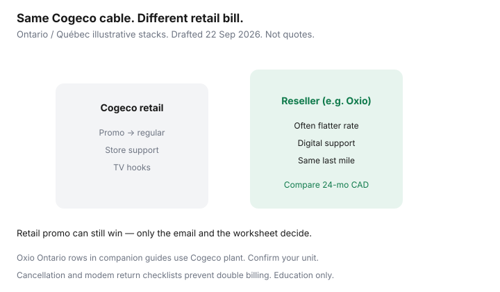

Internet · Canada
Cogeco Internet vs Resellers in Ontario and Québec: Same Cable, Different Bill
Cogeco customers in Ontario and Québec often assume the coaxial in the wall equals a Cogeco bill forever. Wholesalers retail that same last mile under other brands — Oxio is the flat-rate example many Ontario households already meet in comparison tables. The download tile can match while the 24-month CAD, modem rules, and support model diverge.
This is same-plant bill comparison, not a dig at Cogeco. Sometimes retail wins. Sometimes the reseller does. Education only.
Disclosure: Saving Optimizer has no Cogeco, Oxio, or other reseller partnership. Mentions of ISPs and Wi-Fi gear are offer types only. Address qualification required.
Key takeaways
- Resellers can sell the same Cogeco cable plant under a different retail contract — price both before you renew on autopilot.
- Compare after-promo 24-month CAD, data policies, and whether equipment is included or rented.
- Cogeco retail still wins when a written promo or support preference beats the reseller total — get it in email.
- Modem approval lists and return deadlines differ; a messy switch is how people pay two bills.
- Use a decision table at the unit level. Neighbourhood folklore is not an availability tool.
Same cable plant, different retail brands
Cogeco owns and operates cable networks in parts of Ontario and Québec. CRTC wholesale frameworks allow other ISPs to retail services over that access. Oxio’s Ontario comparisons in our Oxio explainer are a concrete example of Cogeco-plant wholesaling. Other independents may appear in some towns and not others. The coax does not care which logo is on your login page; your contract does.
Compare Cogeco retail vs reseller after-promo math
Build two columns:
- Cogeco promo monthly × months, then regular monthly × remaining months to 24.
- Reseller monthly × 24 (or its own credit shape).
Add equipment, mandatory Wi-Fi, and known fees. Ignore “up to” speed poetry. If Cogeco’s year one is cheaper but months 13–24 erase the win, the reseller’s flatter path may still be the household save.

Modem, support, and data-cap differences
- Modem — Retail may push a Cogeco gateway; resellers may include their own or restrict BYO. Check both lists.
- Support — Cogeco offers incumbent-style channels; resellers skew chat. Pick the failure mode you can live with.
- Data — Confirm whether either plan still uses caps or throttles at your tier. Unlimited marketing needs the fair-use footnote.
When Cogeco retail promos beat resellers
Stay or return to Cogeco when the written rate wins 24-month CAD, when you want their TV product on purpose, or when the reseller does not qualify at the suite. Ask retention to beat the reseller number — the promo-expired plan applies here too. After 12 Jun 2026, push back on banned activation-style fees while still reading any term ETF.
Cancellation and return checklist
- Order the new service and confirm activate date.
- Schedule a short overlap so the household is never offline.
- Cancel Cogeco or the reseller under Internet Code timing; keep the confirmation.
- Return gateways with tracking; photograph serial numbers.
- Watch the final bill for rental days past return and for ETF surprises.
Detail: independent switch checklist.
Decision table for Cogeco territory
| Question | Cogeco retail | Reseller |
|---|---|---|
| Qualifies at unit? | ||
| Down / up | ||
| 24-month CAD | ||
| Modem all-in? | ||
| Support fit? | ||
| Winner | Lower honest total you will actually use | |
Sources & date stamps
- Cogeco and reseller (including Oxio) availability tools — verify live (~22 Sep 2026 context).
- CRTC wholesale / Internet Code / 2026-43 fee measures.
- Saving Optimizer — Oxio explained; TekSavvy vs Oxio; switch checklist.
Frequently asked questions
If I switch to a reseller, is my cable still Cogeco’s?
The last mile often remains Cogeco’s plant. Your retail ISP, bill, and support change. Outages can still originate in the shared network.
Is Oxio the only Cogeco reseller?
No. Oxio is a widely cited example in Ontario comparisons. Other independents may qualify. Always run the address tool.
Will Cogeco match a reseller price?
Sometimes through retention. Bring a written reseller total. No email, no deal.
Can I keep my Cogeco modem on a reseller?
Usually not. Expect to return Cogeco gear and use the reseller’s approved equipment.
What about Québec Cogeco areas?
Same method: qualify retail and resellers, then compare 24-month CAD. Also price Bell, Ebox, Videotron, and Fizz when those plants reach the unit.